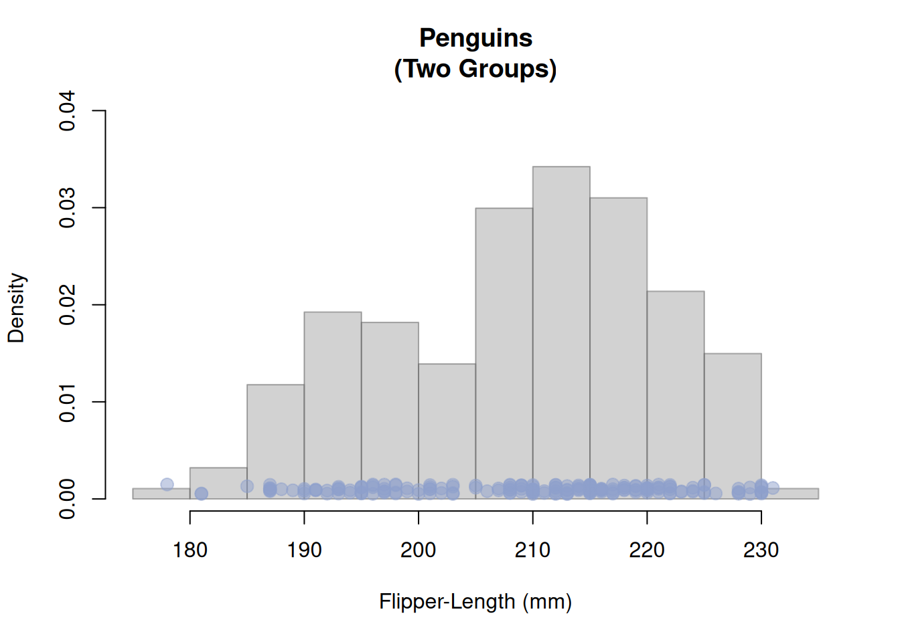
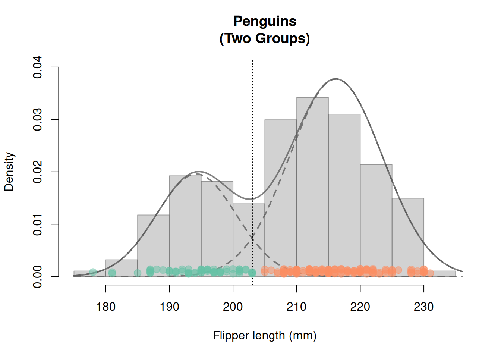

pkgs <- c("tidyverse", # Tidyverse packages
"palmerpenguins", # Penguins data
"scales", # Transparent colors: alpha()
"RColorBrewer", # Nice colors
"mclust", # Gaussian mixture models for clustering
"MASS") # Used to generate multivariate random normal variables
install.packages(pkgs)2 EM Algorithm & Cluster Analysis
The Expectation Maximization (EM) algorithm is often used to simplify or to facilitate complex maximum likelihood estimation problems. In this chapter, we present the EM algorithm for estimating Gaussian mixture distributions, as this is probably its most well-known application. Even the original work on the EM algorithm (Dempster, Laird, and Rubin 1977) already dealt with the estimation of Gaussian mixture distributions.
Possible Applications of the EM-Algorithm and Gaussian mixture distributions
- Finding grouping structures (two or more) in data (cluster analysis). For instance: Automatic video editing (e.g., separation of back- and foreground)
- Traiberman (2019) uses the EM-Algorithm to compute the maximum likelihood estimators. Since he has no information about the beliefs over aggregate shocks (missing data), the maximum likelihood function is very complex. The EM-Algorithm can help here to simplify the likelihood function.
Some literature
Chapter 9 of Pattern Recognition and Machine Learning (Bishop 2006). Free PDF version: PDF-Version
Chapter 8.5 of Elements of Statistical Learning: Data Mining, Inference and Prediction (Hastie et al. 2009). Free PDF version: PDF-Version
R-Packages for this Chapter
The following R-packages are used in this chapter:
For now, we need to load the following R-packages:
library("tidyverse")
library("palmerpenguins") # Penguin data
library("RColorBrewer") # nice colors
library("scales") # transparent colors: alpha()2.1 Motivation: Cluster Analysis using Gaussian Mixture Models
As a data example we use the palmerpenguins data (Horst, Hill, and Gorman (2020)).
These data are from surveys of penguin populations on the Palmer Archipelago (Antarctic Peninsula). Penguins are often difficult to distinguish from one another (Figure 2.1). We will try to find groupings in the penguin data (fin length) using a Gaussian mixture distribution. To be able to estimate such mixing distributions, we introduce the EM algorithm.

The following code chunk prepares the dataset and visualizes it using a histogram.
## Select a color palette
col_v <- RColorBrewer::brewer.pal(n = 3, name = "Set2")
## Preparing the data:
penguins <- palmerpenguins::penguins %>% # penguin data
tidyr::as_tibble() %>% # 'tibble'-dataframe
dplyr::filter(species!="Adelie") %>% # remove penguin species 'Adelie'
droplevels() %>% # remove the non-used factor level
tidyr::drop_na() %>% # remove NAs
dplyr::mutate(species = species, # rename variables
flipper = flipper_length_mm) %>%
dplyr::select(species, flipper) # select variables
##
n <- nrow(penguins) # sample size (n=187)
## Pulling out the variable 'penguin_species':
penguin_species <- dplyr::pull(penguins, species)
## Pulling out the variable 'penguin_flipper':
penguin_flipper <- dplyr::pull(penguins, flipper)
## Plot
## Histogramm:
hist(x = penguin_flipper, freq = FALSE,
xlab="Flipper-Length (mm)", main="Penguins\n(Two Groups)",
col=gray(.65,.5), border=gray(.35,.5), ylim=c(0.0003, 0.039))
## Stipchart hinzufügen:
stripchart(x = penguin_flipper, method = "jitter",
jitter = .0005, at = .001,
pch = 21, col=alpha(col_v[3],.5),
bg=alpha(col_v[3],.5), cex=1.3, add = TRUE)
Caution: We do not use the grouping label (penguin species)
We have the information about the different penguin species (penguin_species) but in the following we pretend not to know this information.
We want to determine the group memberships (species) by cluster analysis on the basis of the fin lengths (penguin_flipper) alone.
Afterward we can use the grouping label in penguin_species to check how good our cluster analysis is.
Clustering using Gaussian Mixture Distributions
At the end of this chapter (Section 2.4), we’ll be able to
- Estimate the Gaussian mixture distribution using the EM algorithm (see Figure 2.2).
- Assign each penguin \(i\) to one of the two species groups according to its predictor value \(x_i\) (flipper length).

Figure Figure 2.2 shows the result of a cluster analysis based on a mixture distribution of two weighted normal distributions. Cluster result (training data): 95% of the penguins could be correctly assigned - based only on their flipper lengths.
The following R codes can be used to reproduce the above cluster analysis (using the R function Mclust of the package mclust) and Figure 2.2:
## mclust R package:
## Cluster analysis using Gaussian mixture distributions
suppressMessages(library("mclust"))
## Number of Groups
G <- 2
## Schätzung des Gaußschen Mischmodells (per EM Algorithmus)
## und Clusteranalyse
mclust_obj <- mclust::Mclust(data = penguin_flipper,
G = G,
modelNames = "V",
verbose = FALSE)
# summary(mclust_obj)
# str(mclust_obj)
## estimated group assignment
class <- mclust_obj$classification
## Fraction of correct group assignments:
# cbind(class, penguin_species)
round(sum(class == as.numeric(penguin_species))/n, 2)
## estimated means of the two Gaussian distributions
mean_m <- t(mclust_obj$parameters$mean)
## estimated variances (and possibly covariances)
cov_l <- list("Cov1" = mclust_obj$parameters$variance$sigmasq[1],
"Cov2" = mclust_obj$parameters$variance$sigmasq[2])
## estimated mixture weights (prior-probabilities)
prop_v <- mclust_obj$parameters$pro
## evaluating the Gaussian mixture density function
np <- 100 # number of evaluation points
xxd <- seq(min(penguin_flipper)-3,
max(penguin_flipper)+5,
length.out = np)
## mixture density
yyd <- dnorm(xxd, mean_m[1], sqrt(cov_l[[1]]))*prop_v[1] +
dnorm(xxd, mean_m[2], sqrt(cov_l[[2]]))*prop_v[2]
## single densities
yyd1 <- dnorm(xxd, mean_m[1], sqrt(cov_l[[1]]))*prop_v[1]
yyd2 <- dnorm(xxd, mean_m[2], sqrt(cov_l[[2]]))*prop_v[2]
## Plot
hist(x = penguin_flipper, xlab="Flipper length (mm)", main="Penguins\n(Two Groups)",
col=gray(.65,.5), border=gray(.35,.5), freq = FALSE, ylim=c(0, 0.04))
lines(x = xxd, y=yyd, lwd=2, col=gray(.35,.75))
lines(x = xxd, y=yyd1, lwd=2, col=gray(.35,.75), lty=2)
lines(x = xxd, y=yyd2, lwd=2, col=gray(.35,.75), lty=2)
abline(v=203.1, lty=3)
stripchart(penguin_flipper[class==1],
method = "jitter", jitter = .0005, at = .001,
pch = 21, col=alpha(col_v[1],.5), bg=alpha(col_v[1],.5), cex=1.3, add = TRUE)
stripchart(penguin_flipper[class==2],
method = "jitter", jitter = .0005, at = .001,
pch = 21, col=alpha(col_v[2],.5), bg=alpha(col_v[2],.5), cex=1.3, add = TRUE)But coding without understanding is dangerous. We’ll learn the statistical method implemented in the R function Mclust it in this chapter.
2.2 The EM Algorithm for Maximum Likelihood Estimation of Gaussian Mixture Distributions
2.2.1 Gaussian Mixture Models (GMM)
We denote a random variable \(X\) that follows a Gaussian mixture distribution as \[ X\sim\mathcal{N}_{\mathcal{mix}}(G,\boldsymbol{\pi}_0,\boldsymbol{\mu}_0,\boldsymbol{\sigma}_0) \]
The corresponding density function of a Gaussian mixture distribution is defined as follows: \[ f_{GMM}(x;\boldsymbol{\pi}_0,\boldsymbol{\mu}_0,\boldsymbol{\sigma}_0)=\sum_{g=1}^G\pi_{g,0}\varphi(x;\mu_{g,0},\sigma_{g,0}) \tag{2.1}\]
- Weights: \(\boldsymbol{\pi}_0=(\pi_{1,0},\dots,\pi_{G,0})\) with \(\pi_{g,0}>0\) and \(\sum_{g=1}^G\pi_{g,0}=1\)
- Means: \(\boldsymbol{\mu}_0=(\mu_{1,0},\dots,\mu_{G,0})\) with \(\mu_{g,0}\in\mathbb{R}\)
- Standard deviations: \(\boldsymbol{\sigma}_0=(\sigma_{1,0},\dots,\sigma_{G,0})\) with \(\sigma_{g,0}>0\)
- Normal density of group \(g=1,\dots,G\): \[ \varphi(x;\mu_{g,0},\sigma_{g,0})=\frac{1}{\sqrt{2\pi}\sigma_{g,0}}\exp\left(-\frac{1}{2}\left(\frac{x-\mu_{g,0}}{\sigma_{g,0}}\right)^2\right) \]
- Unknown parameters: \(\boldsymbol{\pi}\), \(\boldsymbol{\mu}\) und \(\boldsymbol{\sigma}\)
2.2.2 Maximum Likelihood (ML) Estimation
We could try estimating the unknown parameters
- \(\boldsymbol{\pi}_0=(\pi_{1,0},\dots,\pi_{G,0})\),
- \(\boldsymbol{\mu}_0=(\mu_1,\dots,\mu_G)\) and
- \(\boldsymbol{\sigma}_0=(\sigma_1,\dots,\sigma_G)\)
using the maximum likelihood method.
I’ll say it right away: This attempt generally fails.
Basic Idea of ML Estimation
- Assumption: The data \(\mathbf{x}=(x_1,\dots,x_n)\) is a realization of a random sample \[ X_1,\dots,X_n\overset{\text{i.i.d.}}{\sim}X \] with \[ X\sim\mathcal{N}_{\mathcal{mix}}(G,\boldsymbol{\pi}_0,\boldsymbol{\mu}_0,\boldsymbol{\sigma}_0). \]
- Estimate the unknown parameters \(\boldsymbol{\pi}_0\), \(\boldsymbol{\mu}_0\) and \(\boldsymbol{\sigma}_0\) by maximizing the log-likelihood function \[ \begin{align*} %\ln\left(\mathcal{L}(\boldsymbol{\pi},\boldsymbol{\mu},\boldsymbol{\sigma};\mathbf{x})\right)= \ell(\boldsymbol{\pi},\boldsymbol{\mu},\boldsymbol{\sigma};\mathbf{x}) =&\sum_{i=1}^n\ln\left(f_{GMM}(x_i;\boldsymbol{\pi},\boldsymbol{\mu},\boldsymbol{\sigma})\right)\\ =&\sum_{i=1}^n\ln\left(\sum_{g=1}^G\pi_g\varphi(x_i;\mu_g,\sigma_g)\right) \end{align*} \tag{2.2}\] taking into account the following maximization constraints:
Maximization constraints
The maximization must take into account the parameter constraints in Equation 2.1; namely,
- \(\sigma_g>0\) and
- \(\pi_g>0\) for all \(g=1,\dots,G\) such that
- \(\sum_{g=1}^G\pi_g=1\).
The maximizing parameter values \(\hat{\boldsymbol{\pi}}\), \(\hat{\boldsymbol{\mu}}\) and \(\hat{\boldsymbol{\sigma}}\) are the ML-Estimators:
\[ (\hat{\boldsymbol{\pi}},\hat{\boldsymbol{\mu}},\hat{\boldsymbol{\sigma}})=\arg\max_{\boldsymbol{\pi},\boldsymbol{\mu},\boldsymbol{\sigma}}\ell(\boldsymbol{\pi},\boldsymbol{\mu},\boldsymbol{\sigma};\mathbf{x}) \]
😒 Problems with singularities in numerical solutions: If one tries to solve the above maximization problem numerically with the help of the computer, one will quickly notice that the results are highly unstable, implausible and not very trustworthy. The reason for these unstable estimates are problems with singularities.
For real GMMs (i.e. GMMs with more than one group \(G>1\)), problems with singularities occur very easily during a numerical maximization. This happens whenever one (or more) of the normal distribution component(s), say \(\varphi_g(x_i;\mu_g,\sigma_g),\) tries to describe only single data points. This leads to a Gaussian density function centered around a single data point \(x_i\) such that
\[
\varphi(x_i;{\color{red}\mu_g=x_i},\sigma_g),
\] where \[
\sigma_g\to 0.
\] This degenerating situation leads to very large density function values, \[
\varphi(x_i;\mu_g=x_i,\sigma_g)\to\infty\quad\text{for}\quad \sigma_g\to 0,
\] and thus “maximizes†the log-likelihood in an undesirable way (see Figure 2.3).
Such undesirable, trivial maximization solutions typically lead to implausible, non-useful estimation results.
🤓 Analytic solution: It is a bit tedious, but one can maximize the log-likelihood function of the GMM (see Equation 2.2) analytically. If you do this, you will get the following expressions: \[ \begin{align*} \hat\pi_g&=\frac{1}{n}\sum_{i=1}^np_{ig},\quad \hat\mu_g=\sum_{i=1}^n\frac{p_{ig}}{\left(\sum_{j=1}^np_{jg}\right)}x_i\\[2ex] \hat\sigma_g&=\sqrt{\sum_{i=1}^n\frac{p_{ig}}{\left(\sum_{j=1}^np_{jg}\right)}\left(x_i-\hat\mu_g\right)^2}, \end{align*} \tag{2.3}\] where \[ p_{ig}=\frac{\pi_{g,0}\varphi(x_i;\mu_{g,0},\sigma_{g,0})}{f_{GMM}(x_i;\boldsymbol{\pi}_0,\boldsymbol{\mu}_0,\boldsymbol{\sigma}_0)} \tag{2.4}\] for \(i=1,\dots,n\) and \(g=1,\dots,G\).
Note
Deriving the expressions for \(\hat{\mu}_g\), \(\hat{\sigma}_g\) and \(\hat{\pi}_g\) in Equation 2.3 requires multiple applications of the chain rule, product rule, etc., as well as an application of the Lagrange multiplier method for optimization under side-constraints to take into account the maximization constraints.
🙈 However: The above expressions for \(\hat\pi_g\), \(\hat\mu_g\) and \(\hat\sigma_g\) depend themselves on the unknown parameters
- \(\boldsymbol{\pi}_0=(\pi_{1,0},\dots,\pi_{G,0})\),
- \(\boldsymbol{\mu}_0=(\mu_{1,0},\dots,\mu_{G,0})\) and
- \(\boldsymbol{\sigma}_0=(\sigma_{1,0},\dots,\sigma_{G,0})\),
because the probabilities \(0\leq p_{ig}\leq 1\) (defined in Equation 2.4) depend on these unknown parameters.
Thus, the expressions for \(\hat\pi_g\), \(\hat\mu_g\), and \(\hat\sigma_g\) in Equation 2.3 do not allow a direct estimation of the unknown parameters \(\pi_{g,0}\), \(\mu_{g,0}\), and \(\sigma_{g,0}\).
Prior and Posterior Probabilities
- Prior Probability: The probability \[
\pi_g = P\left(\text{Penguine $i$ belongs to group}\;g\right)
\]
in Equation 2.4 is called the prior probability. The prior probability \(\pi_g\) is the probability that a penguine \(i\), from which we know nothing about its flipper length, belongs to group \(g\). - Posterior Probability: The conditional probability. \[ p_{ig} = P\left(\text{Penguine $i$ belongs to group}\;g|X_i = x_i\right) \] in Equation 2.4 is called the posterior probability. The posterior probability \(p_{ig}\) is the probability that penguine \(i\) with flipper length \(x_i\) belongs to group \(g.\)
We’ll discuss the prior and the posterior probability in more detail in Section 2.3.2.
🥳 Solution: The EM Algorithm
2.2.3 The EM Algorithm for GMMs
The expressions for \(\hat\pi_g\), \(\hat\mu_g\), and \(\hat\sigma_g\) in Equation 2.3 suggest a simple iterative maximum likelihood estimation procedure; namely, an alternating estimation of
- the posterior probabilities \[ \begin{align*} p_{ig} &= P\left(\text{Penguine $i$ belongs to group}\;g|X_i = x_i\right)\\[2ex] & = \frac{\pi_{g,0}\varphi(x_i;\mu_{g,0},\sigma_{g,0})}{f_{GMM}(x_i;\boldsymbol{\pi}_0,\boldsymbol{\mu}_0,\boldsymbol{\sigma}_0)} \end{align*} \] for \(i=1,\dots,n,\) and \(g=1,\dots,G,\) using estimates \(\hat{\boldsymbol{\pi}}\), \(\hat{\boldsymbol{\mu}}\), and \(\hat{\boldsymbol{\sigma}}\) of the unknown \(\boldsymbol{\pi}_0\), \(\boldsymbol{\mu}_0\), and \(\boldsymbol{\sigma}_0.\)
and of
- the model parameters \[ (\pi_{g,0},\mu_{g,0},\sigma_{g,0}) \quad\text{for}\quad g=1,\dots,G \] using \(\hat{\pi}_g\), \(\hat{\mu}_g\), \(\hat{\sigma}_g\) defined in Equation 2.3 using estimates \(\hat{p}_{ig}\) for the unknown \(p_{ig}.\)
The EM Algorithm:
Initialization:
Set starting values \[ \begin{align*} &\boldsymbol{\hat{\pi}}^{(0)}=(\hat{\pi}_1^{(0)},\dots,\hat{\pi}_G^{(0)})\\[2ex] &\boldsymbol{\hat{\mu}}^{(0)}=(\hat{\mu}_1^{(0)},\dots,\hat{\mu}_G^{(0)})\\[2ex] &\boldsymbol{\hat{\sigma}}^{(0)}=(\hat{\sigma}_1^{(0)},\dots,\hat{\sigma}_G^{(0)}) \end{align*} \]Loop:
For \(r=1,2,\dots\)(Expectation) Compute: \[\hat{p}_{ig}^{(r-1)}=\frac{\hat{\pi}_g^{(r-1)}\varphi(x_i;\hat{\mu}^{(r-1)}_g,\hat{\sigma}_g^{(r-1)})}{f_{GMM}(x_i;\boldsymbol{\hat{\pi}}^{(r-1)},\boldsymbol{\hat{\mu}}^{(r-1)},\boldsymbol{\hat{\sigma}}^{(r-1)})}\]
(Maximization) Compute:
\(\hat\pi_g^{(r)}=\frac{1}{n}\sum_{i=1}^n\hat{p}_{ig}^{(r-1)},\quad\quad\hat\mu_g^{(r)}=\sum_{i=1}^n\frac{\hat{p}_{ig}^{(r-1)}}{\left(\sum_{j=1}^n\hat{p}_{jg}^{(r-1)}\right)}x_i\)
\(\hat\sigma_g^{(r)}=\sqrt{\sum_{i=1}^n\frac{\hat{p}_{ig}^{(r-1)}}{\left(\sum_{j=1}^n\hat{p}_{jg}^{(r-1)}\right)}\left(x_i-\hat\mu_g^{(r)}\right)^2}\)
Check Convergence:
Stop if the value of the maximized log-likelihood function, \(\ell(\boldsymbol{\hat{\pi}}^{(r)},\boldsymbol{\hat{\mu}}^{(r)},\boldsymbol{\hat{\sigma}}^{(r)};\mathbf{x})\), does not change any more substantially. Or, equivalently, of the parameter estimates do not change any more substantially.
The above pseudocode is implemented in the following code chunk:
library("MASS")
library("mclust")
## data:
x <- cbind(penguin_flipper) # data [n x d]-dimensional.
d <- ncol(x) # dimension (d=1: univariat)
n <- nrow(x) # sample size
G <- 2 # number of groups
## further stuff
llk <- matrix(NA, n, G)
p <- matrix(NA, n, G)
loglikOld <- 1e07
tol <- 1e-05
it <- 0
check <- TRUE
## EM Algorithm
## 1. Starting values for pi, mu and sigma:
pi <- rep(1/G, G) # naive pi
sigma <- array(diag(d), c(d,d,G)) # varianz = 1
mu <- t(MASS::mvrnorm(G, colMeans(x), sigma[,,1]*4) )
while(check){
## 2.a Expectation step
for(g in 1:G){
p[,g] <- pi[g] * mclust:::dmvnorm(x, mu[,g], sigma[,,g])
}
p <- sweep(p, 1, STATS = rowSums(p), FUN = "/")
## 2.b Maximization step
par <- mclust::covw(x, p, normalize = FALSE)
mu <- par$mean
sigma <- par$S
pi <- colMeans(p)
## 3. Check convergence
for(g in 1:G) {
llk[,g] <- pi[g] * mclust:::dmvnorm(x, mu[,g], sigma[,,g])
}
loglik <- sum(log(rowSums(llk))) # current max. log-likelihood value
##
diff <- abs(loglik - loglikOld)/abs(loglik) # rate of change
loglikOld <- loglik
it <- it + 1
## Check whether rate of change is still large enough (> tol)?
check <- diff > tol
}
## Estimation results:
results <- matrix(c(pi, mu, sqrt(sigma)),
nrow = 3,
ncol = 2,
byrow = TRUE,
dimnames = list(c("weights",
"means",
"standard-deviations"),
c("group 1",
"group 2")))
##
results %>% round(., 2) group 1 group 2
weights 0.69 0.31
means 216.20 194.26
standard-deviations 7.32 6.272.3 The True View on the EM Algorithm: Adding Unobserved Variables
The EM algorithm allows maximum likelihood problems to be simplified by adding unobserved (“latent”) variables to the data. This idea is the actually original contribution of the EM Algorithm (Dempster, Laird, and Rubin (1977)). While this idea can be applied for solving various maximum likelihood problems, we keep focusing on estimating GMMs.
Remember:
We were not able to maximize the log-likelihood function \[ \ell(\boldsymbol{\pi},\boldsymbol{\mu},\boldsymbol{\sigma};\mathbf{x}) =\sum_{i=1}^n\ln\left(\sum_{g=1}^G\pi_g\varphi(x_i;\mu_g,\sigma_g)\right) \] directly. In fact, the \(\ln(\sum_{g=1}^G[\dots])\)-construction makes life difficult here.
2.3.1 Data Completion
In our penguin data there are two groups \(g\in\{1,2\}.\)
Thus, in principle (albeit unobserved) there are \(G=2\) dimensional dummy variable vectors \((z_{i1},z_{i2}),\) \(i=1,\dots,n,\) which encode the group-labels, \[ (z_{i1},z_{i2})= \left\{\begin{array}{ll} (1,0)&\text{if penguin }i\text{ belongs to group }g=1\\ (0,1)&\text{if penguin }i\text{ belongs to group }g=2\\ \end{array}\right. \]
Case of more than two \(G>2\) groups:
\[ \begin{align*} &(z_{i1},\dots,z_{ig},\dots,z_{iG})=\\[2ex] &=\left\{\begin{array}{ll} (1,0,\dots,0)&\text{if data point }i\text{ belongs to group }g=1\\ (0,1,\dots,0)&\text{if data point }i\text{ belongs to group }g=2\\ \quad\quad\vdots&\\ (0,0,\dots,1)&\text{if data point }i\text{ belongs to group }g=G\\ \end{array}\right. \end{align*} \]
The group labels \(z_{ig}\) can take values \(z_{ig}\in\{0,1\},\) for each \(i=1,\dots,n\) and \(g=1,\dots,G.\) However, it must hold true that each \(i\) belongs to only one group, i.e. \[ \sum_{g=1}^Gz_{ig}=1\quad\text{for each}\quad i=1,\dots,n. \]
Note
Requiring that \[ \sum_{g=1}^Gz_{ig}=1\quad\text{for each}\quad i=1,\dots,n \] means an important restriction of GMMs, which is not problematic for the penguin data. However, it may be problematic in applications with hierarchical grouping structures, where one can be a member of multiple groups (e.g. member of a gender group and member of a religious group).
Unfortunately, the true group labels \(z_{ig}\) are missing. However, we nevertheless know at least something about their group-assignments. The weights \[ \pi_{1,0},\dots,\pi_{G,0} \] of the Gaussian mixture distribution \[ f_{GMM}(x;\boldsymbol{\pi}_0,\boldsymbol{\mu}_0,\boldsymbol{\sigma}_0)=\sum_{g=1}^G\pi_{g,0}\varphi(x;\mu_{g,0},\sigma_{g,0}), \] give us the proportions of the individual distributions \(\varphi(\cdot;\mu_{g,0},\sigma_{g,0})\) in the total distribution \(f_{GMM}.\) Therefore, we know that, on average, \[ \pi_{g,0}\cdot 100\% \] of the data points \(i=1,\dots,n\) come from group \(g.\)
Thus, we can consider the missing group label \(z_{ig}\) as a unobserved realization of a binary random variable \(Z_{ig}\in\{0,1\}\) with probabilities \[ \begin{align*} P(Z_{ig}=1)&=\pi_{g,0}\\[2ex] P(Z_{ig}=0)&=(1-\pi_{g,0})\\[2ex] \end{align*} \] and with the restriction that \[ \sum_{g=1}^GZ_{ig}=1\quad\text{for each}\quad i=1,\dots,n. \]
Note that the condition \(\sum_{g=1}^GZ_{ig}=1\) implies that if \[ Z_{ig}=1 \] then \[ Z_{ij}=0\quad \text{for all }j\neq g. %\quad \Rightarrow\quad Z_{i1}=0,\dots,Z_{ig-1}=0,Z_{ig+1}=0,\dots,Z_{iG}=0. \]
2.3.2 Prior and Posterior Probabilities
Prior Probability \[ \pi_{g,0} = P(Z_{ig}=1) \] If we know nothing about the flipper length of penguin \(i\) then we are left with the prior probability:\[ p_{ig}=P(Z_{ig}=1|X_i=x_i) \] If we know the flipper length of penguin \(i\) then we can update the prior probability using Bayes’ Theorem (see Equation 2.5) which leads to the posterior probability:
Bayes’ Theorem applied to the Gaussian mixture distribution
\[ \begin{align*} p_{ig} =\overbrace{P(Z_{ig}=1|X_i=x_i)}^{\text{Posterior-prob}} &=\frac{\pi_g\varphi(x_i;\mu_g,\sigma_g)}{f_{GMM}(x_i;\boldsymbol{\pi},\boldsymbol{\mu},\boldsymbol{\sigma})}\\[2ex] &=\frac{\overbrace{P(Z_{ig}=1)}^{\text{prior-prob}}\varphi(x_i;\mu_g,\sigma_g)}{f_{GMM}(x_i;\boldsymbol{\pi},\boldsymbol{\mu},\boldsymbol{\sigma})} \end{align*} \tag{2.5}\]
Where’s the Expectation in the EM-Algorithm?
The posterior probabilities \(p_{ig}\) are conditional means: \[ \begin{align*} p_{ig} &= 1\cdot P(Z_{ig}=1|X_i=x_i)+0\cdot P(Z_{ig}=0|X_i=x_i)\\[2ex] &= \mathbb{E}(Z_{ig}|X_i=x_i)\\ \end{align*} \tag{2.6}\] Thus, the computation of \(p_{ig}\) is the Expectation-step of the EM algorithm (Section 2.2.3).
2.3.3 The Abstract Version of the EM-Algorithm
If, in addition to the data points (i.e. the predictors such as the flipper lengths), \[ \mathbf{x}=(x_1,\dots,x_n), \] we had also observed the group assignments, \[ \mathbf{z}=(z_{11},\dots,z_{nG}), \] then we could establish the following alternative likelihood (\(\tilde{\mathcal{L}}\)) and log-likelihood (\(\tilde{\ell}\)) functions: \[ \begin{align*} \tilde{\mathcal{L}}(\boldsymbol{\pi},\boldsymbol{\mu},\boldsymbol{\sigma};\mathbf{x},\mathbf{z}) &=\prod_{i=1}^n\prod_{g=1}^G\left(\pi_g\varphi(x_i;\mu_g,\sigma_g)\right)^{z_{ig}}\\[2ex] \tilde{\ell}(\boldsymbol{\pi},\boldsymbol{\mu},\boldsymbol{\sigma};\mathbf{x},\mathbf{z}) &=\sum_{i=1}^n\sum_{g=1}^Gz_{ig}\left\{\ln\left(\pi_g\right)+\ln\left(\varphi(x_i;\mu_g,\sigma_g)\right)\right\}\\[2ex] &=\sum_{g=1}^G\left(\sum_{i=1}^nz_{ig}\left\{\ln\left(\pi_g\right)+\ln\left(\varphi(x_i;\mu_g,\sigma_g)\right)\right\}\right) \end{align*} \]
Unlike the original log-likelihood function (Equation 2.2), the new log-likelihood function \(\tilde\ell\) is easy to maximize: We can effectively maximize separately for each group \(g,\) which then involves only a single normal density function and not a too flexible mixture of density functions. This simplifies and stabelizes the maximization problem considerably, since the normal density belongs to the exponential family (see Section 1.4) which is not the case for the normal mixture distribution.
However, we do not observe the realizations \[ \mathbf{z}=(z_{11},\dots,z_{nG}), \] but only know the distribution of the random variables \[ \mathbf{Z}=(Z_{11},\dots,Z_{nG}). \] This leads to a stochastic version (in \(\mathbf{Z}\)) of the log-likelihood function: \[ \tilde{\ell}(\boldsymbol{\pi},\boldsymbol{\mu},\boldsymbol{\sigma};\mathbf{x},\mathbf{Z})=\sum_{i=1}^n\sum_{g=1}^GZ_{ig}\left\{\ln\left(\pi_g\right)+\ln\left(\varphi(x_i;\mu_g,\sigma_g)\right)\right\} \]
We do not know \(Z_{ig},\) but we can compute the best (in the mean square sense) predition of \(Z_{ig}\) using the conditional mean \[ \mathbb{E}_{\boldsymbol{\theta}}\left(Z_{ig}|\mathbf{X}=\mathbf{x}\right) =\mathbb{E}_{\boldsymbol{\theta}}\left(Z_{ig}|X_i=x_i\right)=p_{ig}, \] where \(\boldsymbol{\theta}=(\boldsymbol{\pi},\boldsymbol{\mu},\boldsymbol{\sigma})\) is used to denote the vector of potential parameter values, and where (by Equation 2.5) \[ \begin{align*} p_{ig} &=\overbrace{P(Z_{ig}=1|X_i=x_i)}^{\text{Posterior-prob}}\\[2ex] &=\frac{\pi_g\varphi(x_i;\mu_g,\sigma_g)}{f_{GMM}(x_i;\boldsymbol{\pi},\boldsymbol{\mu},\boldsymbol{\sigma})}. \end{align*} \]
From this, we can calculate the conditional expected value (using Equation 2.6), which motivates the “Expectation”-Step in the EM-algorithm: \[ \begin{align*} &\mathbb{E}_{\boldsymbol{\theta}}\left(\tilde{\ell}(\boldsymbol{\pi},\boldsymbol{\mu},\boldsymbol{\sigma};\mathbf{x},\mathbf{Z})|\mathbf{X}=\mathbf{x}\right)\\[2ex] &\quad =\sum_{i=1}^n\sum_{g=1}^G\mathbb{E}_{\boldsymbol{\theta}}\left(Z_{ig}|\mathbf{X}=\mathbf{x}\right)\left\{\ln\left(\pi_g\right)+\ln\left(\varphi(x_i;\mu_g,\sigma_g)\right)\right\}\\[2ex] &\quad =\sum_{i=1}^n\sum_{g=1}^Gp_{ig}\left\{\ln\left(\pi_g\right)+\ln\left(\varphi(x_i;\mu_g,\sigma_g)\right)\right\}, \end{align*} \] where \(\boldsymbol{\theta}=(\boldsymbol{\pi},\boldsymbol{\mu},\boldsymbol{\sigma})\) is used to denote the parameter vector.
Tip
Given the estimates \(\hat{p}_{ig},\) for all \(i=1,\dots,n\) and \(g=1,\dots,G,\) we can compute ML-estimates \((\hat\pi_g, \hat\mu_g,\hat\sigma_g)\) for all \(g=1,\dots,G.\)
Given ML-estimates \(\hat{\theta}_g=(\hat\pi_g, \hat\mu_g,\hat\sigma_g),\) for all \(g=1,\dots,G,\) we can compute \(\hat{p}_{ig}\) using
\[
\hat{p}_{ig}
=\frac{\hat{\pi}_g\varphi(x_i;\hat{\mu}_g,\hat{\sigma}_g)}{f_{GMM}(x_i;\boldsymbol{\hat\pi},\boldsymbol{\hat\mu},\boldsymbol{\hat\sigma})}.
\]
The following EM algorithm differs only in notation from the version already discussed in Section 2.2.3. The notation chosen here clarifies that the Expectation-step updates the log-likelihood function to be maximized in the Maximization-step.
The chosen notation is abstract enough to transfer the basic idea of the EM algorithm to other maximum likelihood problems.
Initialization:
Set starting values \(\boldsymbol{\hat{\theta}}^{(0)}=(\boldsymbol{\hat{\pi}}^{(0)}, \boldsymbol{\hat{\mu}}^{(0)}, \boldsymbol{\hat{\sigma}}^{(0)}),\) where \[ \begin{align*} &\boldsymbol{\hat{\pi}}^{(0)}=(\hat{\pi}_1^{(0)},\dots,\hat{\pi}_G^{(0)})\\[2ex] &\boldsymbol{\hat{\mu}}^{(0)}=(\hat{\mu}_1^{(0)},\dots,\hat{\mu}_G^{(0)})\\[2ex] &\boldsymbol{\hat{\sigma}}^{(0)}=(\hat{\sigma}_1^{(0)},\dots,\hat{\sigma}_G^{(0)}) \end{align*} \]Loop:
For \(r=1,2,\dots\)(Expectation) Compute: \[ \begin{align*} &\mathcal{Q}(\boldsymbol{\theta},\boldsymbol{\hat{\theta}}^{(r-1)}) =\mathbb{E}_{\boldsymbol{\hat{\theta}}^{(r-1)}}\Big(\tilde{\ell}(\underbrace{\boldsymbol{\pi},\boldsymbol{\mu},\boldsymbol{\sigma}}_{\boldsymbol{\theta}};\mathbf{x},\mathbf{Z})\big|\mathbf{X}=\mathbf{x}\Big)\\[2ex] &=\sum_{i=1}^n\sum_{g=1}^G\mathbb{E}_{\boldsymbol{\theta}^{(r-1)}}\left(Z_{ig}\big|X_i=x_i\right)\left\{\ln\left(\pi_g\right)+\ln\left(\varphi(x_i;\mu_g,\sigma_g)\right)\right\}\\[2ex] &=\sum_{i=1}^n\sum_{g=1}^G\hat{p}_{ig}^{(r-1)}\left\{\ln\left(\pi_g\right)+\ln\left(\varphi(x_i;\mu_g,\sigma_g)\right)\right\} \end{align*} \] where \[ \hat{p}_{ig}^{(r-1)} = \frac{\hat{\pi}_g^{(r-1)} \varphi(x_i;\hat{\mu}_g^{(r-1)},\hat{\sigma}_g^{(r-1)})}{f_{GMM}(x_i;\boldsymbol{\hat{\pi}}^{(r-1)},\boldsymbol{\hat{\mu}}^{(r-1)},\boldsymbol{\hat{\sigma}}^{(r-1)})} \]
(Maximization) Compute: \[ \begin{align*} \boldsymbol{\hat{\theta}}^{(r)}=\arg\max_{\boldsymbol{\theta}}\mathcal{Q}(\boldsymbol{\theta},\boldsymbol{\hat{\theta}}^{(r-1)}) \end{align*} \] where \(\boldsymbol{\hat{\theta}}^{(r)}=(\boldsymbol{\hat{\pi}}^{(r)},\boldsymbol{\hat{\mu}}^{(r)},\boldsymbol{\hat{\sigma}}^{(r)}),\) \[ \begin{align*} &\boldsymbol{\hat{\pi}}^{(r)}=(\hat{\pi}_1^{(r)},\dots,\hat{\pi}_G^{(r)})\\[2ex] &\boldsymbol{\hat{\mu}}^{(r)}=(\hat{\mu}_1^{(r)},\dots,\hat{\mu}_G^{(r)})\\[2ex] &\boldsymbol{\hat{\sigma}}^{(r)}=(\hat{\sigma}_1^{(r)},\dots,\hat{\sigma}_G^{(r)}), \end{align*} \] with
\(\hat\pi_g^{(r)}=\frac{1}{n}\sum_{i=1}^np_{ig}^{(r-1)},\quad\quad\hat\mu_g^{(r)}=\sum_{i=1}^n\frac{p_{ig}^{(r-1)}}{\left(\sum_{j=1}^np_{jg}^{(r-1)}\right)}x_i\)
\(\hat\sigma_g^{(r)}=\sqrt{\sum_{i=1}^n\frac{p_{ig}^{(r-1)}}{\left(\sum_{j=1}^np_{jg}^{(r-1)}\right)}\left(x_i-\hat\mu_g^{(r)}\right)^2}\)
Check Convergence:
Stop if the value of the maximized log-likelihood function \[ \mathcal{Q}(\boldsymbol{\hat{\theta}}^{(r)},\boldsymbol{\hat{\theta}}^{(r-1)}) \] does not change anymore substantially; i.e., if \[ \mathcal{Q}(\boldsymbol{\hat{\theta}}^{(r)},\boldsymbol{\hat{\theta}}^{(r-1)}) \approx \mathcal{Q}(\boldsymbol{\hat{\theta}}^{(r+1)},\boldsymbol{\hat{\theta}}^{(r-1+1)}), \] or, equivalently, if \[ \left|\boldsymbol{\hat{\theta}}^{(r+1)} - \boldsymbol{\hat{\theta}}^{(r)}\right|\approx 0. \]
2.4 Cluster Analysis
The problem of predicting a discrete random variable \(Y\) (i.e. the group label) from a possibly multivariate predictor \(X\) is called classification.
Consider iid data \[ (Y_1,X_1),\dots,(Y_n,X_n)\overset{\text{i.i.d.}}{\sim}(Y,X) \] where
- \(X_i\in\mathbb{R}^p\) is a \(p\)-dimensional vector and
- \(Y_i\) takes values in some finite set \(\mathcal{Y}.\)
Note: Above in Section 2.3, we used \(Z,\) here we use \(Y\) to denote the (unknown) group labels.
Example
Predict \(Y\in\mathcal{Y}=\{0,1\}\) (e.g. passing the exam (\(Y=1\)) vs. failing \(Y=0\)) using the observed predictor values \(X\in\mathbb{R}^p\) (e.g. previous gradings, number of hours studied, etc.)
A classification rule \(h\) is a function \[ h: \mathbb{R}^p \to \mathcal{Y}. \] That is, when we observe a new \(X\in\mathbb{R}^p,\) we predict \(Y\) to be \(h(X)\in\mathcal{Y}.\)
(Un-)Supervised Classification
Supervised Classification: If there are learning/training data with group-labels \[ ({\color{red}Y_1},X_1),\dots,({\color{red}Y_n},X_n) \] that can be used to estimate \(h,\) it’s called a supervised classification (computer science: supervised learning) problem.
Unsupervised Classification/Cluster Analysis: If there are learning/training data without group-labels \[ X_1,\dots,X_n \] it’s called a unsupervised classification (computer science: unsupervised learning) problem or cluster analysis.
2.4.1 Bayes Classifier
We would like to find a classification rule \(h\) that makes accurate predictions. The most often used quantity to measure the accuracy of classification methods is the error rate.
We try to find a classifier \(h\) that minimizes \(L(h)\) and \(\hat{L}_n(h),\) respectively.
Let us focus on the special case of only two groups which can be coded, without loss of generality, as \[ Y\in\{0,1\} \] For instance, \[ Y_i=\left\{\begin{array}{ll} 1&\text{if penguin $i$ belongs to species Chinstrap}\\ 0&\text{if penguin $i$ belongs NOT to species Chinstrap}. \end{array}\right.. \]
The regression function (i.e. the conditional mean function) is then given by \[ \begin{align*} m(x) &:=\mathbb{E}(Y|X=x)\\[2ex] &=1\cdot P(Y=1|X=x) + 0\cdot P(Y=0|X=x)\\[2ex] &=P(Y=1|X=x). \end{align*} \] That is, the conditonal mean \(m(x)\) is the posterior probability, i.e. the probability of \(Y=1\) given \(X=x.\)
From Bayes’ theorem it follows that \[ \begin{align*} m(x) &=P(Y=1|X=x)\\[2ex] &=\frac{P(Y=1) f_{X|Y}(x|Y=1)}{P(Y=0) f_{X|Y}(x|Y=0)+P(Y=1) f_{X|Y}(x|Y=1) },\\[2ex] &=\frac{\pi_1\; f_{X|Y}(x|Y=1)}{\pi_0\;f_{X|Y}(x|Y=0)+\pi_1\;f_{X|Y}(x|Y=1)}\\[2ex] &=\frac{\pi_1\; f_{X|Y}(x|Y=1)}{f_{X}(x)}, \end{align*} \tag{2.8}\] where
- \[
\pi_0= P(Y=0)\quad\text{and}\quad\pi_1 = P(Y=1)
\] denote the prior probabilities with \(\pi_0 + \pi_1 = 1,\)
- \[ f_{X|Y}(x|Y=0)\quad\text{and}\quad f_{X|Y}(x|Y=1) \] denote the conditional density functions of \(X\) given \(Y=0\) and \(Y=1,\) respectively, and
- \[ f_X(x)=\pi_1\;\; f_{X|Y}(x|Y=1) + \pi_0\;\; f_{X|Y}(x|Y=0) \] denotes the unconditional density function of \(X.\)
Note: Here \(f\) denotes here some (unknown) density function, not necessarily the Gaussian density or a Gaussian mixture.
The Bayes classifier, \(h^\ast,\) classifies data according to the Bayes classification rule
Equivalent forms of the Bayes’ classification rule: \[ \begin{align*} h^\ast(x) & = \left\{\begin{array}{ll} 1&\text{if }m(x)>\frac{1}{2}\\ 0&\text{otherwise}. \end{array}\right.\\[2ex] & = \left\{\begin{array}{ll} 1&\text{if }P(Y=1|X=x)>P(Y=0|X=x)\\ 0&\text{otherwise}. \end{array}\right.\\[2ex] & = \left\{\begin{array}{ll} 1&\text{if }\pi_1 f_{X|Y}(x|Y=1)>\pi_0f_{X|Y}(x|Y=0)\\ 0&\text{otherwise}. \end{array}\right. \end{align*} \]
The Bayes decision rule \(h^\ast(x)\) depends on the unknown \(m(x)=P(Y=1|X=x)\) and thus cannot be used in practice. However, we can use data to find some approximation to the Bayes decision rule.
Very roughly, there are three main approaches:
Empirical Risk Minimization: Choose a set of classifiers \(\mathcal{H}\) and try to find \(\hat{h}\in\mathcal{H}\) such that \[ \hat{h}:=\arg\min_{h\in\mathcal{H}}L(h) \] Example: Random forests, neural nets, etc.
Regression: Find an estimate \(\hat{m}(x)\) of the regression function \(m(x)=\mathbb{E}(Y|X=x)\) in Equation 2.8 and then use \[ \hat{h}(x) = \left\{\begin{array}{ll} 1&\text{if }\hat{m}(x)>\frac{1}{2}\\ 0&\text{otherwise}. \end{array}\right. \] Examples: Linear regression, logistic regression, etc.
Density Estimation: Find density and probability estimates \(\hat{f}_{X|Y},\) \(\hat{\pi}_0=\hat{P}(Y=0),\) and \(\hat{\pi}_1=\hat{P}(Y=1)\) and define \[ \begin{align*} \hat{m}(x) &=\hat{P}(Y=1|X=x)\\[2ex] &=\frac{\hat{\pi}_1 \hat{f}_{X|Y}(x|Y=1)}{\hat{\pi}_0 \hat{f}_{X|Y}(x|Y=0) + \hat{\pi}_1 \hat{f}_{X|Y}(x|Y=1)}. \end{align*} \] Then use \[ \hat{h}(x) = \left\{\begin{array}{ll} 1&\text{if }\hat{m}(x)>\frac{1}{2}\\ 0&\text{otherwise}. \end{array}\right. \] Examples: Linear/quadratic discriminant analysis, naive Bayes, Gaussian mixture distributions, etc.
More than two group labels
Of course, we can generalize all this to the case where the discrete random variables \(Y\) takes on more than only two group-labels.
Let \[ Y\in\{1,\dots,G\} \] for any \(G>1.\)
Then, the (error rate optimal) Bayes classification rule is \[ \begin{align*} h^\ast(x) & = \arg\max_{g}P(Y=g|X=x) \\[2ex] & = \arg\max_{g}\pi_g f_{X|Y}(x|Y=g),\\[2ex] \end{align*} \] where \[ P(Y=g|X=x) = \frac{\pi_g f_{X|Y}(x|Y=g)}{\sum_{g=1}^G\pi_g f_{X|Y}(x|Y=g)} \] denotes the posterior probability of group \(g\), and \[ \pi_g = P(Y=g) \] denotes the prior probability of group \(g,\) and \(f_{X|Y}(x|Y=g)\) denotes the conditional density function of \(X\) given \(Y=g.\)
2.4.2 Synopsis: Penguin Example
In our penguin example, we use the density estimation approach.
Estimating general densities \(f\) is hard — particularly in multivariate cases. Therefore, one often tries to make certain simplifying assumptions such as \(f\) being a Gaussian (mixture) density.
In our penguin example, we assume that the conditional density function of flipper length \(X\) given species \(Y=g\) can be modelled reasonably well using a Gaussian density, \[ f_{X|Y}(x|Y=g) = \varphi(x|\mu_g,\sigma_g) = \frac{1}{\sqrt{2\pi}\sigma_g}\exp\left(-\frac{1}{2}\left(\frac{x-\mu_g}{\sigma_g}\right)^2\right). \] which leads to a Gaussian Mixture distribution.
The unknown parameters \(\pi_g,\) \(\mu_g,\) and \(\sigma_g,\) \(g=1,\dots,G,\) are estimated using the EM algorithm
Unsupervised Classification: Assign the data points \(x_i\) to the group \(g\) according to the classification rule \[ \begin{align*} \hat{h}(x_i) %& = \arg\max_{g}P(Y=g|X=x) \\[2ex] & = \arg\max_{g}\hat{\pi}_g \varphi(x_i|\hat{\mu}_g,\hat{\sigma}_g),\\[2ex] \end{align*} \]
Figure 2.4 shows the iterative progress when estimating a Gaussian mixture distribution using the EM algorithm:
- The vertical line shows the decision boundary
- The two Gaussian density functions (dashed lines) show the conditional densities \(\varphi(x|\hat{\mu}_g,\hat{\sigma}_g),\) \(g=1,2.\)
- The orange and green dots show the (unsupervised) classification results
The final estimation result replicates Figure 2.2.
The average penguin probably doesn’t care about our EM Algorithm.

Exercises
Exercise 1.
Consider \[ X_1,\dots,X_n\overset{\text{i.i.d}}{\sim}X, \] where \(X\sim\text{Bernoulli}(p).\) Write the expressions of the (log) likelihood functions \(\mathcal{L}\) and \(\ell\).
Now let \[ X_1,\dots,X_n\overset{\text{i.i.d}}{\sim}X, \] where \(X\) is a Bernoulli mixture random variable with parameters \(p_g\) and prior probabilities \(\pi_g\), \(g=1,\dots,G\). Write the expressions of the (log) likelihood functions \(\mathcal{L}\) and \(\ell\).
Let \[ (Z_{i1},\dots,Z_{iG})\in\{0,1\}^G \] denote the vector of latent group indicator random variables with \[ Z_{i1}+\dots + Z_{iG}=1 \] and \[ P(Z_{ig}=1)=\pi_g,\quad g=1,\dots,G. \] Thus, the realization \(z_i=(0,1,0,\dots,0)\) means that the \(i\)th observation comes from the \(2\)nd Bernoulli distribution \(\text{Bernoulli}(p_2)\).
Write the expressions of the (log) likelihood functions \(\tilde{\mathcal{L}}(\mathbf{p},\boldsymbol{\pi};\mathbf{x},\mathbf{Z})\) and \(\tilde{\ell}(\mathbf{p},\boldsymbol{\pi};\mathbf{x},\mathbf{Z})\) that take into account the latend group indicator random variables.Write down the expression for the posterior probability \[ \mathfrak{p}_{ig} = P(Z_{ig}=1 | X_i = x_i). \]
Derive the conditional expectation of \(\tilde\ell,\) given \(\mathbf{X}=\mathbf{x},\) \[\mathbb{E}_{\mathbf{p},\boldsymbol{\pi}}\left(\tilde{\ell}(\mathbf{p},\boldsymbol{\pi};\mathbf{x},\mathbf{Z})\big|\mathbf{X}=\mathbf{x}\right). \]
Maximize \(\mathbb{E}_{\mathbf{p},\boldsymbol{\pi}}\left(\tilde{\ell}(\mathbf{p},\boldsymbol{\pi};\mathbf{x},\mathbf{Z})\big|\mathbf{X}=\mathbf{x}\right)\) with respect to \(p_g\) for \(g=1,\dots,G.\)
Maximize \(\mathbb{E}_{\mathbf{p},\boldsymbol{\pi}}\left(\tilde{\ell}(\mathbf{p},\boldsymbol{\pi};\mathbf{x},\mathbf{Z})\big|\mathbf{X}=\mathbf{x}\right)\) with respect to \(\pi_g\) for \(g=1,\dots,G\) such that \(\sum_{g=1}^G\pi_g=1.\)
Sketch the EM-Algorithm
References
Bishop, Christopher M. 2006. Pattern Recognition and Machine Learning. Springer.
Dempster, Arthur P, Nan M Laird, and Donald B Rubin. 1977. “Maximum Likelihood from Incomplete Data via the EM Algorithm.†Journal of the Royal Statistical Society: Series B 39 (1): 1–22.
Hastie, Trevor, Robert Tibshirani, Jerome H Friedman, and Jerome H Friedman. 2009. The Elements of Statistical Learning: Data Mining, Inference, and Prediction. Springer.
Horst, Allison Marie, Alison Presmanes Hill, and Kristen B Gorman. 2020. Palmerpenguins: Palmer Archipelago (Antarctica) Penguin Data. https://doi.org/10.5281/zenodo.3960218.
Traiberman, Sharon. 2019. “Occupations and Import Competition: Evidence from Denmark.†American Economic Review 109 (12): 4260–4301.